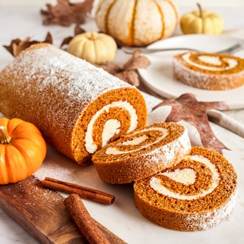

Pumpkin Spice Roll

A tasty Fall dessert with a creamy filling that's sure to leave you wanting more which is great because these come in easily servable logs, ready to be cut and shared!
Ingredients
- 1/4 cup powdered sugar (to sprinkle on towel)
- 3/4 cup all-purpose flour
- 1/2 teaspoon baking powder
- 1/2 teaspoon baking soda
- 1/2 teaspoon ground cinnamon
- 1/2 teaspoon ground cloves
- 1/4 teaspoon salt
- 1 cup granulated sugar
- 2/3 cup LIBBY'S® 100% Pure Pumpkin
- 1 cup walnuts, chopped (optional)
- 1 package (8 ounces) cream cheese, at room temperature
- 1 cup powdered sugar, sifted
- 6 tablespoons butter or margarine, softened
- 1 teaspoon vanilla extract
- Powdered sugar (optional for decoration)